9
Updating Design Data
This chapter explains how to use the Virtuoso® Layout Suite XL layout editor (Layout XL) to make design changes and update your design as you progress.
It contains information on the following areas.
- Updating Components and Nets
- Updating Layout Constraints
- Updating Layout Parameters
- Updating Schematic Parameters
- Updating Device Correspondence
- Updating the Connectivity Reference
- Updating Binding
- Updating All Physical Bindings
Updating Components and Nets
Use the Update Components And Nets command to automatically update your layout to take account of instances, pins, and connectivity that you have changed in the schematic.
In contrast to Generate All From Source, which deletes all the existing components in the layout view and regenerates everything from scratch, Update Components And Nets updates only the components that have changed. It
- Adds new instances and pins.
- Removes old instances (including any unbound vector and mosaic instances) and pins, along with any empty nets left as a result of the removal.
- Updates instance masters to match those in the schematic.
- Updates the instance connectivity to match the connectivity of the schematic instance to which it is bound.
- Updates the names of instances, terminals, and nets to match them with the corresponding schematic instance, terminal, or net to which they are bound.
- Updates the net signal types that have been modified to match the schematic net signal type.Updates the layout parameters and constraints.
- Removes any non-matching global terminals on the net, if a matching terminal already exists. Such non-matching global terminals may result if an original global terminal is modified, for instance, due to a name change in an associated cell.
-
Adds missing split-fingered devices in the layout, if the environment variables bindStrict and bindNewSplitParam are set to
t. -
(ICADVM20.1 Photonics Only) When using the Virtuoso Photonics Solution with the
Virtuoso_Photonics_Optionlicense checked out, the Update Components And Nets command updates the default pin values such as Width, Radius, and Input Angle.
To update the components and nets in a layout view,
-
From the layout window menu bar, choose Connectivity – Update – Components And Nets.
If the schematic has been changed since it was last extracted, you see a dialog box indicating that it needs to be re-extracted.
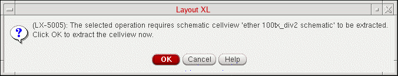Click OK in the message box to extract the schematic and all its reference libraries. (The extracted cellviews are not automatically saved.)To specify a different extraction behavior, click Cancel in the message box and choose the Check – Hierarchy command from the schematic window menu bar. For more information, see Checking a Design Hierarchy in the Virtuoso Schematic Editor User Guide.When the schematic is extracted, the Update Components and Nets form is displayed.
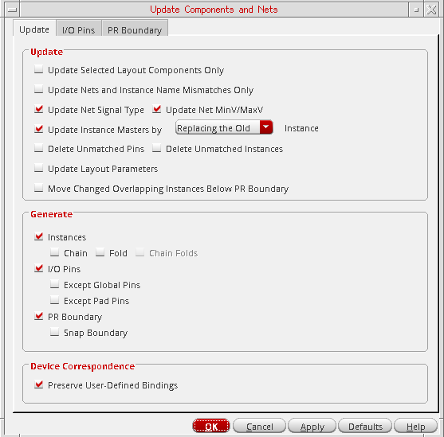The form remembers values set previously in the current Virtuoso session. When you open it for the first time, it shows the default values set in your.cdsenvfile. - Set the options on the form as needed. For more information, see
-
Click OK in the Update Components and Nets form.
Layout XL updates the layout design as specified in the form. For detailed information on these settings, see the sections listed in step 2.If either the Update Instance Masters by Creating a New or the Instances option is selected, clicking Apply creates any ungenerated schematic instances or instances with a master mismatch in the layout. To prevent any new layout instances with the same name as that of an existing layout instance creating a conflict, the new layout instance is renamed with the suffix_1, for exampleI5toI5_1. Clicking Apply a second time or clicking OK, confirms that the names mismatch and require updating. The new layout instance is renamed by removing the suffix,I5_1toI5, and the existing layout instance is renamed by adding the suffix_old, for exampleI5toI5_old.
Limitations of Update Components and Nets
Update Components And Nets does not correct any connectivity errors introduced while defining a many-to-many device binding using the Define Device Correspondence command. These errors are reported by Check Against Source and must be fixed manually using the Define Device Correspondence form.
Troubleshooting Update Components and Nets
Any problems encountered during the update are reported in the CIW and in a Layout XL Info text window. Use Checking Against Source to get more information on the problems encountered and how to resolve them.
Updating Selected Layout Components
To update only selected instances and pins:
- Select the Update Tab of the Update Components and Nets form.
-
In the Update group box, select the Update Selected Layout Components Only check box.
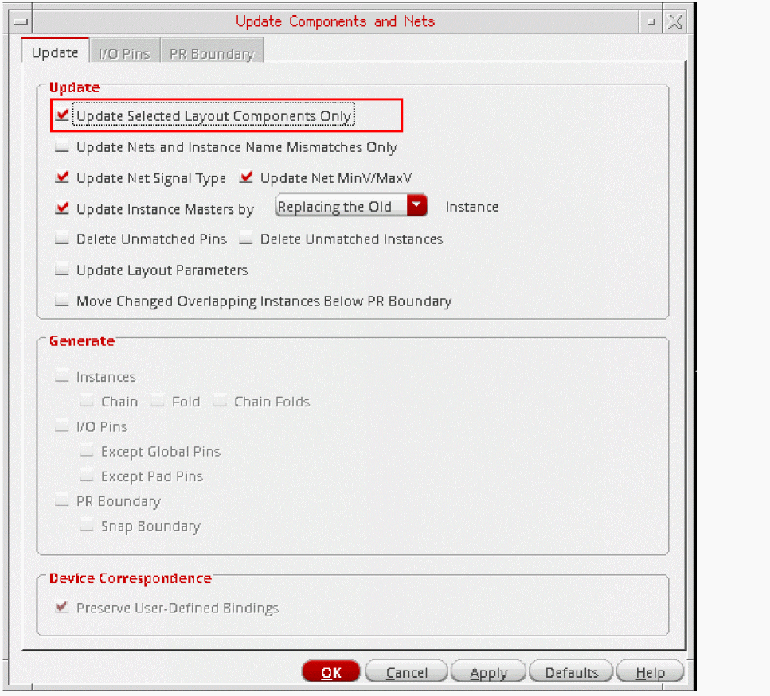The options to generate missing components, and consequently the I/O Pins and PR Boundary tabs, are turned off and grayed out.
Preserve User-Defined Bindings is switched on and grayed out. -
To update only the connectivity information for the selected instances and pins, select the Update Nets and Instance Name Mismatches Only check box and proceed to step 9. If any pins have got swapped due to a schematic ECO, run the Update with Update Nets and Instance Name Mismatches Only selected to ensure that the original pin positions are retained in the layout. To reflect the pin swaps in the layout, run the Update with Update Nets and Instance Name Mismatches Only deselected.
For more information, see Updating Nets and Instance Name Mismatches Only. - To update the signal types assigned to nets from the schematic view and the min and max voltages on the schematic nets, select the Update Net Signal Type check box.
-
To update instances with incorrect masters, select the Update Instance Masters check box and specify how an incorrect instance is handled:
- By default, it is removed and replaced by an instance of the correct master in the same location.
-
When set to Creating a New, the command puts a marker on the instance with the incorrect master and renames it name
_old. It then creates a new instance with the correct master and places it below the PR boundary.Because you are creating a new instance, you can optionally enable Chain, Fold, or Chain Folds in this mode. If the disableFolding environment variable is set and the folding threshold for the component type is set to0, folding is disabled.
- To delete layout pins and instances that are not present in the schematic, select the Delete Unmatched Pins and Delete Unmatched Instances check boxes. When you delete unmatched pins, redundant nets and terminals are also deleted.
- To update parameters and parameter values in the layout instances to match those on their schematic counterparts, select the Update Layout Parameters check box.
- To automatically place instances below the PR boundary if they overlap other instances during the update, select the Move Changed Overlapping Instances Below PR Boundary check box. The overlapping instances are the ones that have changed in size, and if placed at their original location, may overlap other unchanged instances.
- Click OK to update the selected instances and pins.
Updating Nets and Instance Name Mismatches Only
To update only the net assignments and instance and net names in your layout design without changing any other components:
- Select the Update Tab of the Update Components and Nets form.
-
In the Update group box, select the Update Nets and Instance Name Mismatches Only check box.
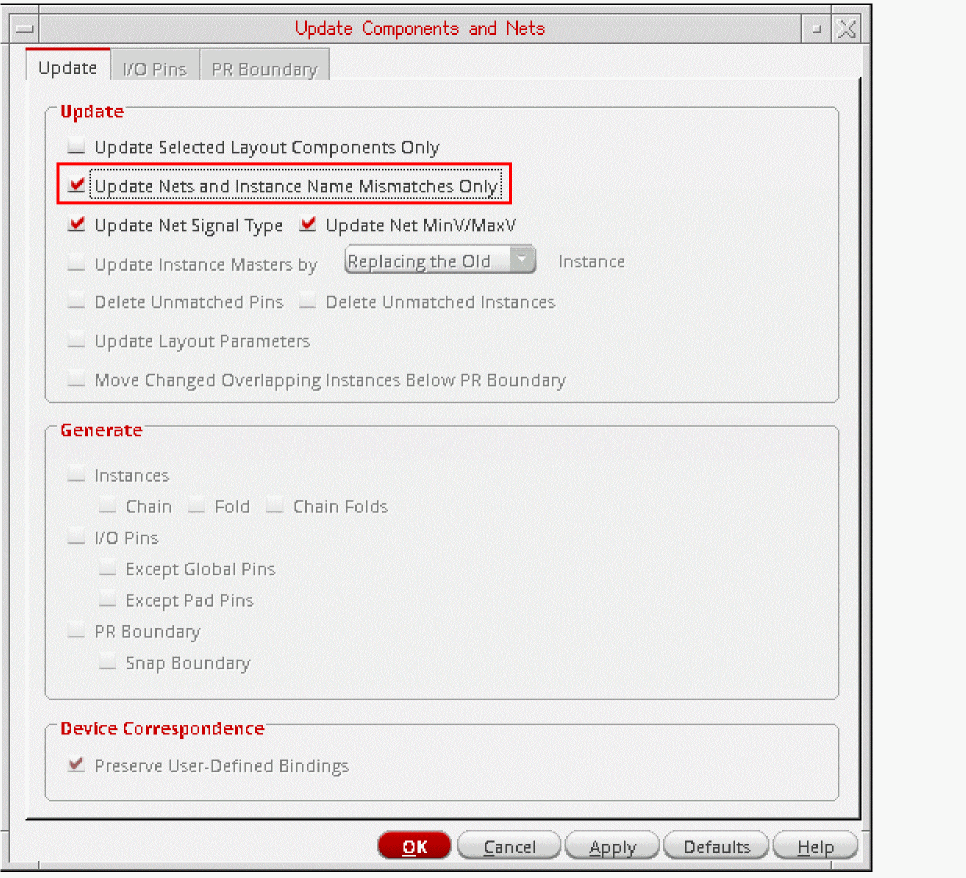Preserve User-Defined Bindings is selected but inactivated, ensuring that these bindings are maintained. All other options on the form are inactive, except Update Selected Layout Components Only and Update Net Signal Type. - To update only selected instance and pins, select the Update Selected Layout Components Only check box.
- To update the signal types assigned to nets and the min and max voltages on the schematic nets, select the Update Net Signal Type check box.
-
Click OK.
Layout XL updates net assignments and instance, terminal, and net names to match those in the schematic. If any pins have got swapped due to a schematic ECO, running the Update with Update Nets and Instance Name Mismatches Only selected ensures that the original pin positions are retained in the layout. To reflect the pin swaps in the layout, run the Update with Update Nets and Instance Name Mismatches Only deselected.
Specifying the Components to be Updated
When updating the whole design, you can specify that missing components are generated and existing components are regenerated. To do this:
- Select the Update Tab of the Update Components and Nets form.
-
Select the appropriate options in the Update group box to specify how the layout components that need to be changed or removed should be handled.
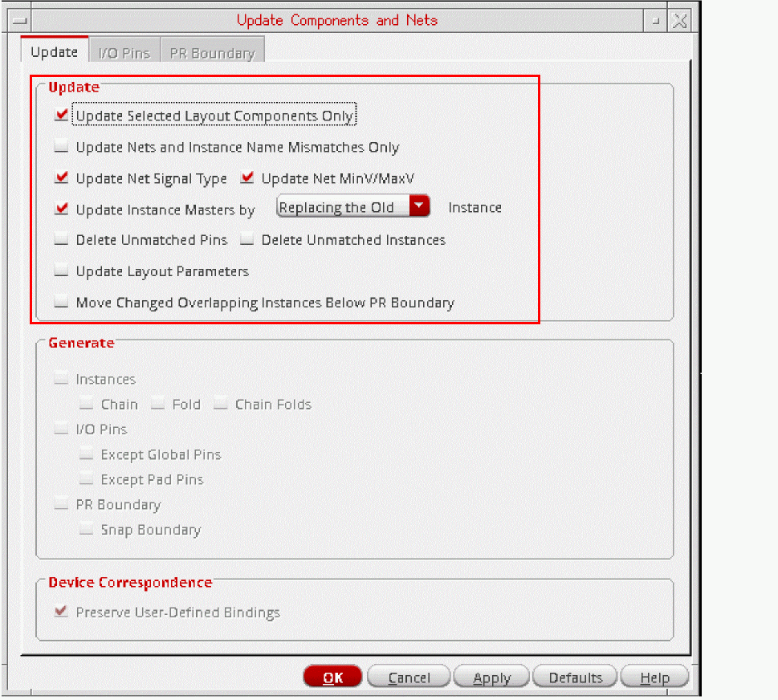- To update only selected instances and pins, see Updating Selected Layout Components.
- To update only the connectivity information for the selected instances and pins, see Updating Nets and Instance Name Mismatches Only.
- To update the signal types assigned to nets from the schematic view, select the Update Net Signal Type option.
-
To update instances with incorrect masters, select Update Instance Masters and specify how the incorrect instance should be handled.
- By default, it is removed and replaced by an instance of the correct master in the same location.
-
When set to Creating a New, the command puts a marker on the instance with the incorrect master and renames it name
_old. It then creates a new instance with the correct master and places it below the PR boundary.
Because you are creating a new instance, you can optionally enable Chain, Fold, and Chain Folds in this mode. If the disableFolding environment variable is set and the folding threshold for the component type is set to0, folding is disabled. - To delete layout pins and instances that are not present in the schematic, select the Delete Unmatched Pins and Delete Unmatched Instances options. When you delete unmatched pins, redundant nets and terminals are deleted at the same time.
- To update parameters and parameter values in the layout instances to match those on their schematic counterparts, select the Update Layout Parameters option. For more information, see Updating Layout Parameters.
- To automatically place instances below the PR boundary if they overlap other instances during the update, select the Move Changed Overlapping Instances Below PR Boundary option. The overlapping instances are the ones that have changed in size, and if placed at their original location, may overlap other unchanged instances.
- To delete layout pins and instances that are not present in the schematic, select the Delete Unmatched Pins and Delete Unmatched Instances options. When you delete unmatched pins, redundant nets and terminals are deleted at the same time.
- To update parameters and parameter values in the layout instances to match those on their schematic counterparts, select the Update Layout Parameters option. For more information, see Updating Layout Parameters.
- To automatically place instances below the PR boundary if they overlap other instances during the update, select the Move Changed Overlapping Instances Below PR Boundary option. The overlapping instances are the ones that have changed in size, and if placed at their original location, may overlap other unchanged instances.
-
Use the options in the Generate group box to regenerate instances, pins, and PR and snap boundaries.
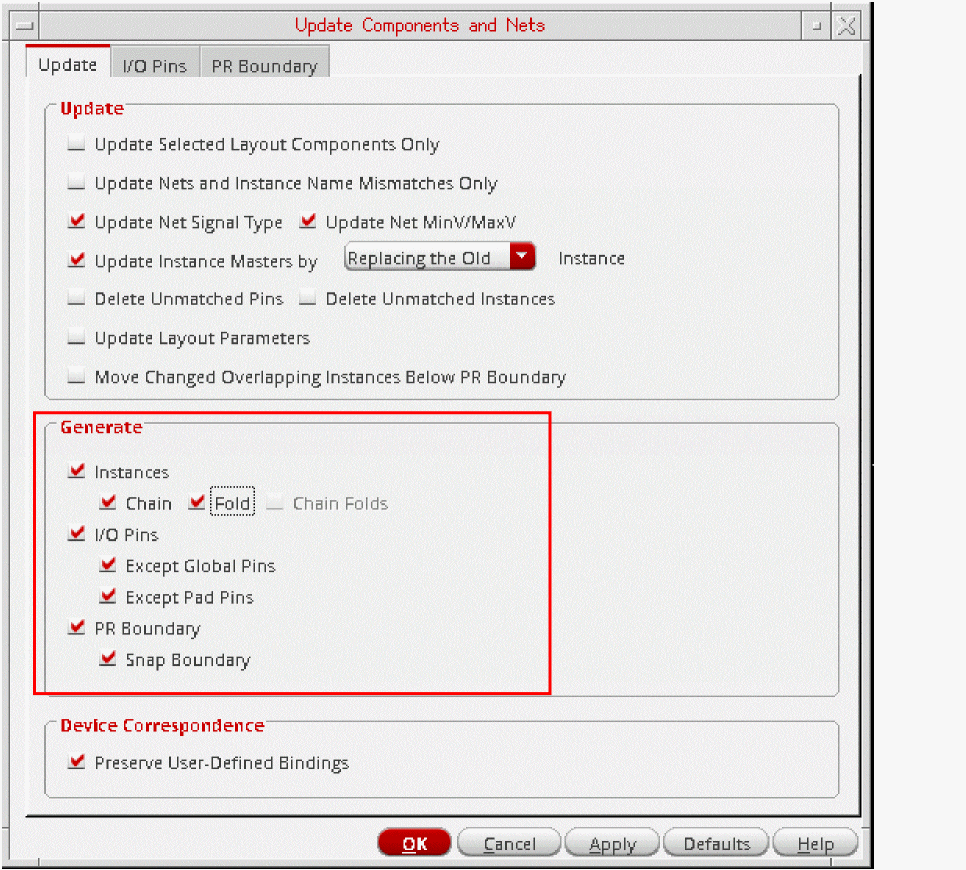-
Select the Instances, I/O Pins, and PR Boundary options as required.
Layout XL puts any missing instances and pins below the design boundary and updates their connectivity. Pins are automatically snapped to the placement grid. -
To chain any new transistors, select the Chain check box.
New chains are not attached to existing chains. Devices that were chained prior to running the command are not moved from their existing positions; missing devices are added in the correct position in the chain and not under the place and route boundary. -
To divide new transistors in the design into two or more folds, select the Fold check box.If the disableFolding environment variable is set and the folding threshold for the component type is set to
0, folding is disabled. -
To chain the individual folds of a transistor, select the Chain Folds check box. The Chain Folds check box is active only when the Chain check box is deselected and the Fold check box is selected. If the disableFolding environment variable is set and the folding threshold for the component type is set toIf the Chain and Fold check boxes are deselected, and you have deleted all the folds of a folded transistor, Update Components And Nets generates a single device for that transistor. If you have deleted only some folds of a folded device, Layout XL creates markers only if the folds in a numbered sequence are missing. Otherwise, Layout XL does nothing about the missing folds of folded transistors.
0, folding is disabled.All devices to be chained or folded must belong to a component type which has Component class set to PMOS or NMOS and values set for the Active layer, Width parameter, and Folding threshold parameters. See Component Types Mode. - To avoid generating layout pins for global nets in the schematic, select the Except Global Pins check box.
- To avoid generating layout pins for schematic pins that are connected to I/O pads, select the Except Pad Pins check box.
- To generate a snap boundary, select the Snap Boundary check box.
-
Select the Instances, I/O Pins, and PR Boundary options as required.
-
To preserve any user-defined binding of devices between the schematic and the layout, select the Preserve User-Defined Bindings.
This option preserves user-defined one-to-one, many-to-many, many-to-one, and one-to-many device correspondence defined in the Define Device Correspondence form. It does not report missing devices or shapes within a bound group. See Updating Device Correspondence.
Specifying the I/O Pins to be Updated
You specify the pins to be generated on the I/O Pins Tab of the Update Components and Nets form. The options and use model are the same as for the I/O Pins tab on the generate Layout form. For more information, see Specifying the I/O Pins to be Generated.
Layout XL generates any missing pins, places them below the design boundary, and updates their connectivity appropriately. If a layout instance includes a terminal but no pin for a global layout net (because, for example, you have deleted the pin), the pin is regenerated. All pins are automatically snapped to the placement grid.
Pin permutation is not preserved during the update. If any component in the design needs to be updated, the command resets the permutation status of all the cells to that originally stored in the schematic.
Physical-only terminals (those with the physOnly property set to t) created to support an implicit inherited connection defined using a net expression in the schematic are not updated. Physical-only terminals are deleted only if they have no connections.
Specifying How the PR Boundary is Updated
You specify how the place and route boundary is updated on the PR Boundary Tab of the Update Components and Nets form. The controls and use model are the same as for the I/O Pins tab on the Generate Layout form. For more information, see Specifying the Place and Route Boundary.
If you uncheck the PR Boundary option on the form, the existing place and route boundary is retained and is not automatically resized to take into account the updated design.
Updating Components and Nets Using SKILL
You can also use the public SKILL API to run Update Components And Nets using either of the following methods.
- The lxUpdateComponentsAndNets SKILL function.
-
A combination of the following functions, which let you specify what is generated and updated directly in SKILL.
lxUpdateComponentsAndNetsStart
lxGetAvailablePinLPPs
lxGetPinNets
lxSetBoundaryOptions
lxSetAreaEstimationOptions
lxSetGenerateOptions
lxSetNetPinSpecs
lxSetUpdateOptions
lxUpdateComponentsAndNetsFinish
For more information, see the sections on the above functions in the Virtuoso Layout Suite SKILL Reference.
Updating Layout Constraints
To update constraints from schematic to layout, do one of the following:
- From the layout window menu bar, choose Connectivity – Update – Layout Constraints.
-
In the Constraint Manager toolbar, click the Update Layout Constraints button.
Constraints in the schematic are transferred to the top-level layout view. Constraints that have been created in the schematic but not yet saved are also transferred.
Updating Layout Constraints after Folding
If you fold instances in the layout view using one of the methods listed below, you must use the Update Layout Constraints command to ensure that all the transferred constraints have the correct folded members.
- Generate Selected From Source
- Generate Folded Devices
- Placement Planning incremental layout generation
Related Topics
Updating Layout Parameters
Use the Update Layout Parameters command to update the parameter values of devices in the layout to match the values in the schematic. The software checks the parameter values on the specified devices in the schematic against the values in the layout and updates the layout parameters when it finds differences (unless you have set the lvsIgnore or ignore property on a device).
The updates are reported in a Layout XL Info window, along with information about any layout devices that contain properties that do not exist on their schematic counterparts. If updating parameters results in a change in the layout, Layout XL updates the connectivity and indicates any problems by drawing markers in the layout window.
If you are using CDF callbacks, the command first applies the callback and then applies all the differing parameters on the schematic device.
Specifying the Parameters and Properties to Update
You specify how the parameters and properties are updated on the Parameters Tab of the Connectivity form.
-
Consider parameters only compares only the CDF parameters in the schematic against the parameters and properties in the layout and updates values that do not match.
By default, parameters that are present in the schematic but missing from the layout are ignored. To propagate the missing parameters to the layout, make sure the Ignore missing parameters or properties check box is OFF. -
Consider parameters and properties compares CDF parameters and cell and instance properties in the schematic against the parameters and properties in the layout and updates values that do not match. Choose this option to update in the layout user-defined schematic properties, or when you know that a device has specific properties that you are interested in updating.
By default, parameters and properties that are present in the schematic but missing from the layout are ignored. To propagate the missing parameters and properties to the layout, make sure the Ignore missing parameters or properties check box is OFF. - Ignore missing parameters or properties ignores parameters (and properties, if Consider parameters and properties is checked) that are present in the schematic but missing in the layout. Switch off this option if, for example, your schematic has additional properties that you want to propagate to the layout.
-
Update based on parameters to ignore for updates the layout ignoring either the parameters to be ignored for generation or the parameters to be ignored for check. See Ignoring Parameters and Terminals.
By default, the option updates based on parameters to ignore for generation. In this case, the parameters, which may be ignored for check but are not ignored for generation are updated. If you choose to update based on parameters to ignore for check then only those instances for which a parameter or property mismatch is reported during a Check Against Source, are updated. The parameters that are ignored during the check, and therefore, don’t report a mismatch, are not updated.
By default, the software updates layout parameter values only and ignores parameters that are present in the schematic but missing from the layout.
To propagate any missing parameters from the schematic to the layout, switch off Ignore missing parameters or properties.
To update parameters and properties, including missing properties, set the options as shown below.
To update parameters and properties, ignoring those that have not been reported during Check Against Source, set the options as shown below.
Limitations
Update Layout Parameters does not
- Delete any parameters or properties from the layout view.
-
Update the parameters of complex devices defined using the
lxCombinationproperty, because this might involve deleting and creating instances in the layout view. Use Update Components And Nets instead. - Update split transistors if the sizes of the resulting transistors are different, because such transistors may be the result of manual splitting. If the layout figure selected for update is a transistor that has been folded, Layout XL displays a message that says that it is not updating the parameters.
-
Copy
netSetproperties, which are used to specify the new value of a global signal when you are using inherited connections to assign more than one value to a global net.
Updating Layout Parameter Values in Preselection Mode
To update parameter values for devices already selected,
- In the layout canvas, select the devices you want to update.
-
From the layout window menu bar, choose Connectivity – Update – Layout Parameters.
If you are using CDF callbacks, Update Layout Parameters applies the callback first and then updates the parameters on the selected layout devices to match the values of the corresponding devices in the schematic. -
Press
Escto exit the command.
Updating Layout Parameter Values in Postselection Mode
To update parameter values in postselection mode,
-
From the layout window menu bar, choose Connectivity – Update – Layout Parameters.
The CIW and the layout window prompt you to select the devices whose parameter values you want to update. -
To see a list of the layout devices in the design, move the cursor into the layout canvas and press
F3.
The Device List form is displayed.
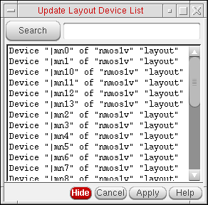 -
Select a device in the form, in the layout canvas, or in the schematic window.
Layout XL highlights the device in all the three locations. -
Click Apply in the form or move the cursor into the layout canvas and press
Return.
If you are using CDF callbacks, Update Layout Parameters applies the callback first and then updates the parameters on the selected layout devices to match the values of the corresponding devices in the schematic. -
Press
Escto exit the command.
Updating Parameter Values for Folded Devices
To update parameter values for folded devices:
-
Switch on the Update width parameter method option on the Generation Tab of the Connectivity form before you run Update Layout Parameters.
Excluding a Specific Parameter from the Update
To prevent a specific layout parameter from being updated by the Update Layout Parameters command:
- From the layout window menu bar, choose Options – Layout XL and click the Parameters tab.
-
Select Parameters to ignore during generation and update, type the name of the parameter you want to ignore in the field provided, and click Add.
The parameter name is added to the list and will not be updated when you run Update Layout Parameters. -
From the layout window menu bar, choose Connectivity – Update – Layout Parameters.
The layout parameters are updated to match the values in the schematic; however, the parameter you specified to be ignored is not updated.
Updating Schematic Parameters
Use the Update Schematic Parameters command to update the parameter values of devices in the schematic to match the values in the layout.
The software checks the values of the parameters of the specified devices in the schematic against the values in the layout and updates the schematic parameters when it finds differences (unless you have set the lvsIgnore or ignore property on a device).
The updates are reported in a Layout XL Info window. If you are using CDF callbacks, the command applies the callback first then applies all differing parameters on the layout device.
Specifying the Parameters and Properties to Update
Use the LAM file to specify how the parameters and properties are updated. Alternatively, specify this on the Parameters Tab of the Connectivity form.
-
Consider parameters only compares only the CDF parameters in the schematic against the parameters and properties in the layout and updates values that do not match.
By default, parameters that are present in the layout but missing from the schematic are ignored; switch off Ignore missing parameters or properties to propagate the missing parameters to the schematic. -
Consider parameters and properties compares CDF parameters and cell and instance properties in the schematic against the parameters and properties in the layout and updates values that do not match.
By default, parameters that are present in the layout but missing from the schematic are ignored; switch off Ignore missing parameters or properties to propagate the missing parameters to the schematic. - Ignore missing parameters or properties ignores parameters (and properties, if Consider parameters and properties is checked) that are present in the layout but missing in the schematic. Switch off this option if, for example, your layout has additional properties that you want to propagate to the schematic.
-
Update based on parameters to ignore for updates the layout ignoring either the parameters to be ignored for generation or the parameters to be ignored for check.
By default, the option updates based on parameters to ignore for generation. In this case, the parameters, which may be ignored for check but are not ignored for generation are updated. If you choose to update based on parameters to ignore for check then only those instances for which a parameter or property mismatch is reported during a Check Against Source are updated. The parameters that are ignored during the check, and therefore, don’t report a mismatch are not updated.
By default, the software updates schematic parameter values only and ignores parameters that are present in the layout but missing from the schematic.
To propagate any missing parameters from the layout to the schematic, switch off Ignore missing parameters or properties.
To update parameters and properties, including missing properties, set the options as shown below.
To update parameters and properties, ignoring those that have not been reported during Check Against Source, set the options as shown below.
Updating Schematic Parameter Values in Preselection Mode
To update the schematic parameters of devices already selected:
- In the schematic or layout window, select the devices you want to update.
-
From the layout window menu bar, choose Connectivity – Update – Schematic Parameters.
If you are using CDF callbacks, Layout XL applies the callback first and then updates the parameters on the selected schematic devices to match the values of the corresponding devices in the layout (unless you have set the lvsIgnore or ignore property on a device).
An Information window reports any changes that are made. -
Press
Escto exit the command.
Updating Schematic Parameter Values in Postselection Mode
-
From the layout window menu bar, choose Connectivity – Update – Schematic Parameters.
The CIW and layout window prompt you to select the devices whose parameters you want to update. -
To see a list of the layout devices in design, move the cursor to the layout canvas and press
F3.
The Device List form is displayed.
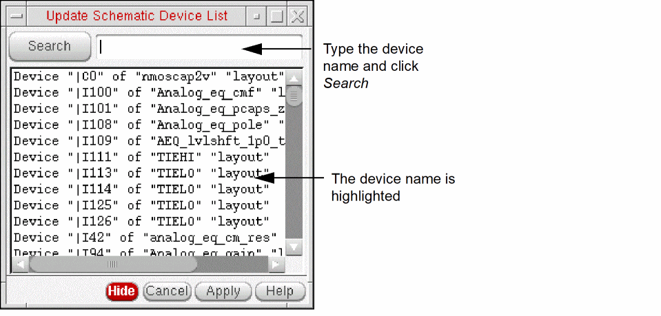 -
Select a device in the form, in the layout window, or in the schematic window.
Layout XL highlights the device in all three locations. -
Click Apply in the form or move the cursor into the layout canvas and press
Return.
If you are using CDF callbacks, Layout XL applies the callback first and then updates the parameters on the selected schematic devices to match the values of the corresponding devices in the layout (unless you have set the lvsIgnore or ignore property on a device).
An Information window reports any changes that are made. -
Press
Escto exit the command.
Updating Device Correspondence
For each schematic and layout pair, the correspondence between the components in the views is determined by the Layout XL binder engine.
Initial Binding
When Layout XL is started, the binder binds by respecting the existing bindings.This means only those bindings that were previously saved are retained when a new Layout XL session is started.
When components are generated in the layout, the system propagates the connectivity to the layout view and sets the correspondence between the generated instances and their schematic counterparts. This correspondence is reported in the CIW, as shown below, when you start Layout XL.
The report displayed above indicates some unbound terminals and nets in the design, suggesting the correspondence is not perfect. In such cases, an additional warning message is issued in CIW, as shown in the figure below, suggesting possible methods for improving the bindings.
Incremental Binding
Device correspondence and connectivity information are updated incrementally by the system, whenever required, for example, when instances are created in the design. However, for incremental binding to occur, the layout device to be bound must have a single, unique connectivity match in the schematic with the same master.
Because the incremental binder is physical-connectivity-aware, instances connected by shapes that are not assigned to a net are recognized as interconnected. Therefore, when incrementally binding such instances, Layout XL automatically creates and assigns nets to the instance terminals, if required.
You can also choose to switch off the incremental binder, if required. To do this, you must set the bindIncr environment variable to nil. By doing so, any unbound layout instances or pins will remain unbound within the Layout XL session. On the other hand, if you set bindIncrConn to nil, any unbound layout instances or pins will be bound by name even when the devices do not have exactly the same master or have different connectivity.
Ignoring Instances for Binding
If you have any unbound instances that you have edited and want to retain as unbound even after running incremental binding, you can set an ignore property on them. To do this:
The selected instance will have an ignore property set due to which the instance will be ignored for binding. However, any existing bound instances will continue to get updated, if required, during incremental binding.
t. This will set an ignore property on any unbound instances that have been edited and would otherwise be considered for binding during an incremental binder run. After the ignore property is set, the instances become unavailable for all binding—initial and incremental. However, any unbound instances that have not been edited, will not have the ignore property set. Therefore, these instances will continue to be available for binding during the next binding run.
To remove the ignore property from an unbound instance to make it available for binding, right-click the instance and select the Remove Ignore shortcut command.
Related Topic
User-Defined Device Correspondence
If you need to change the system-generated device correspondence manually, you can do so by using the Define Device Correspondence command available in the Connectivity menu. User-defined device correspondence is persistent between Layout XL sessions, and can be preserved during Generate All From Source and Update Components And Nets by selecting the Preserve User-Defined Bindings option in the Generate Layout and Update Components and Nets forms, respectively.
The Define Device Correspondence command and, where required, the Assign layout instance terminals form correctly propagate connectivity to the layout implementation. There is no need to run the Update Components And Nets command after defining the device correspondence. To update the connectivity of devices that are already correctly bound, you need to only run the Update Components And Nets command.
Dynamic Updates to the Define Device Correspondence Display
The Define Device Correspondence form shows the current correspondence between instances and terminals in the schematic and layout views. The form is dynamically updated to reflect the changes you make.
- For performance reasons, the form does not update dynamically if you select more than 100 objects from the design canvas. To define device correspondence for a large number of objects, select them in the form itself.
- The All Terminals and Unbound Terminals filters show the terminals in the design, not the pin figures that typically represent them in the layout window.
-
If you delete a pin figure in the layout window, the corresponding terminal is removed from the Define Device Correspondence form only if the net connected to this terminal has no other connections. If the net has other connections, the terminal is not removed.
Similarly, if you delete an instance, the terminals connected to the nets of the instance terminal are deleted only if they are no longer connected in the design.
The procedures that follow describe how to manually define bindings between instances by using the Define Device Correspondence form. These procedures apply equally for terminals as well.
Handling Transparent Layout Hierarchy
Define Device Correspondence supports transparent layout hierarchy. What this means is that the binder can bind to the instances and nets within a transparent instance master.
When descended into a transparent layout hierarchy:
- The layout tree of the Define Device Correspondence form updates to display only the instances that are within context of the transparent instance that you have descended into.
- The schematic tree of the Define Device Correspondence form updates to display only the unbound instances and the bound instances that are within context of the transparent instance that you have descended into.
For more information about transparent layout hierarchy and the supported Layout XL operations, see Generating Transparent Layout Hierarchy.
Related Topics
- Defining a One-to-One Device Correspondence
- Defining a One-to-Many Device Correspondence
- Defining a Many-to-One Device Correspondence
- Defining a Many-to-Many Device Correspondence
- Assigning Layout Instance Terminals to Nets
- Deleting a Device Correspondence
- Rapid Adoption Kit (Working with the Binder to stay XL-compliant)
Defining a One-to-One Device Correspondence
To define a correspondence between a single schematic instance (or terminal) and a single layout instance (or terminal),
-
From the layout window menu bar, choose Connectivity – Define Device Correspondence.
The Define Device Correspondence form appears.
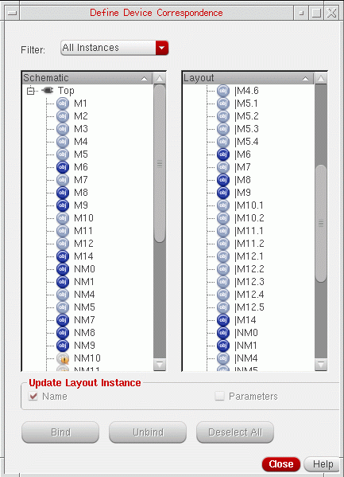 -
Select an unbound instance from the Schematic tree and an unbound instance from the Layout tree.
You can only bind the unbound instances. To only see the unbound instances, choose Unbound Instances from the Filter cyclic field. To see only the unbound terminals, choose Unbound Terminals.
- (Optional) Use the two Update Layout Instance options at the bottom of the form to update the name and parameter values of the layout instance to match those in the schematic instance.
-
Click Bind to create a correspondence between the selected schematic instance and the selected layout instance.
- If the instance masters match, the correspondence is updated and the connectivity from the schematic is propagated to the layout.
- If the instance masters do not match, the Assign layout instance terminals form is displayed. This form lets you assign layout nets to the unbound instance terminals in the selected layout instance. For more information, see Assigning Layout Instance Terminals to Nets.
Showing Best Matches
Use the Show Best Matches command to display only the best matches—the instances that have the correct master—for an unbound schematic or a layout instance. To list the best matches for an unbound schematic or a layout instance:
-
Double-click an unbound instance from the Schematic or Layout tree.
Alternatively, you can right-click the unbound Schematic or Layout instance for which you want to display the best matches and choose the Show Best Matches command from the menu.
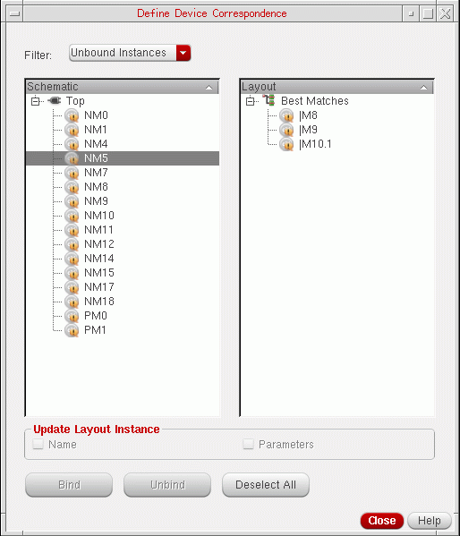
The corresponding best matches for the selected instance are displayed in the other column. For example, if you selected an unbound Schematic instance, such as NM5 in the figure above, its corresponding best matches are displayed in the Layout tree.
You can then select the appropriate best match for Defining a One-to-One Device Correspondence or select appropriate best matches for Defining a One-to-Many Device Correspondence.
Defining a One-to-Many Device Correspondence
To define a correspondence between a single schematic instance and multiple layout instances:
-
From the layout window menu bar, choose Connectivity – Define Device Correspondence.
The Define Device Correspondence form appears. -
Select an unbound instance from the Schematic tree and the unbound instances from the Layout tree to which the selected schematic instance needs to be bound.
- (Optional) Use the two Update Layout Instance options at the bottom of the form to update the name and parameter values of the layout instance to match those in the schematic instance.
-
Click Bind to create a correspondence between the selected schematic instance and the selected layout instances.
Layout XL binds the instances, but needs more information to propagate the connectivity correctly. Therefore, the Assign layout instance terminals form is displayed, which you can use to assign layout nets to the unbound instance terminals in the selected layout instance. For more information, see Assigning Layout Instance Terminals to Nets.
Defining a Many-to-One Device Correspondence
To define a correspondence between multiple schematic instances and a single layout instance (for example, binding two schematic transistors to a single inverter in the layout):
-
From the layout window menu bar, choose Connectivity – Define Device Correspondence.
The Define Device Correspondence form appears. -
Select the unbound instances from the Schematic tree and the unbound instance from the Layout tree to which the selected schematic instances need to be bound.
-
Click Bind to create a correspondence between the selected schematic instances and the selected layout instance.
Layout XL binds the instances, but needs more information to propagate the connectivity correctly. Therefore, the Assign layout instance terminals form is displayed, which you can use to assign layout nets to the unbound instance terminals in the selected layout instance. For more information, see Assigning Layout Instance Terminals to Nets. -
When you have finished assigning the layout instance terminals, click Close to close the form.
The schematic and layout correspondence is updated and the connectivity you defined is propagated to the layout.
Defining a Many-to-Many Device Correspondence
To define a correspondence between multiple schematic instances and multiple layout instances:
-
From the layout window menu bar, choose Connectivity – Define Device Correspondence.
The Define Device Correspondence form appears. -
Select the instances to be bound from the Schematic and the Layout trees.
-
Click Bind to create a correspondence between the selected schematic instances and the selected layout instances.
Layout XL binds the instances, but needs more information to propagate the connectivity correctly. Therefore, the Assign layout instance terminals form is displayed, which you can use to assign layout nets to the unbound instance terminals in the selected layout instance. For more information, see Assigning Layout Instance Terminals to Nets.
Assigning Layout Instance Terminals to Nets
When creating a one-to-one device correspondence between schematic and layout instances with matching masters, Define Device Correspondence is able to assign layout instance terminals to the correct nets automatically. However, in some cases, the command is unable to assign all the instance terminals automatically; for example,
- If the instance masters in a one-to-one correspondence do not match.
- If you are creating a one-to-many, many-to-one, or many-to-many device correspondence.
In these cases, the Assign layout instance terminals form is displayed. You can use this form to manually assign layout nets to the unbound instance terminals in the selected layout instances.
To assign layout instance terminals:
-
In the Assign layout instance terminals form, select a layout net from the list on the right and one or more instance terminals to which it is to be assigned from the list on the left.
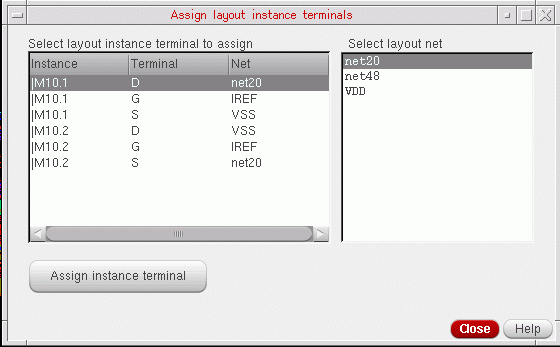 -
Click Assign instance terminal.
The instance terminals are assigned to the net and the updated assignment is instantly reflected in the Assign instance terminal form. -
Click Close to dismiss the form.
The device correspondence is updated and the connectivity you defined is propagated to the layout.
If you close the form without manually assigning all the terminals, the connections of the remaining terminals are not modified.
Deleting a Device Correspondence
To delete a schematic to layout device correspondence:
-
From the layout window menu bar, choose Connectivity – Define Device Correspondence.
The Define Device Correspondence form appears. - Choose either All Instances or All Terminals from the Filter cyclic field, depending on the type of object that you want to unbind.
-
From the Schematic or Layout tree, select the schematic or the layout device that you want to unbind.
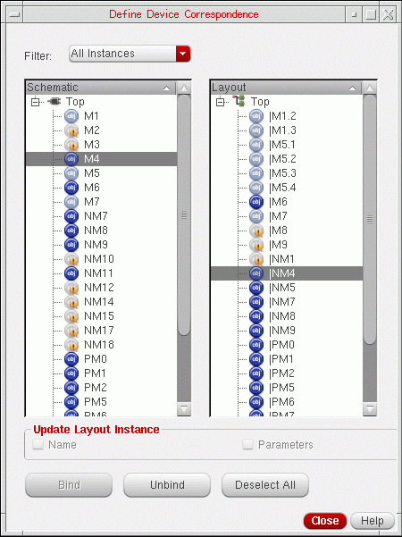The single device or the devices to which the selected device is bound are selected in the other tree. -
Click Unbind.
All the devices that formed the selected device correspondence are unbound—have their instance terminal connectivity removed—and the binding has been updated. The unbound devices display an orange icon () next to their name, as shown in the figure below.
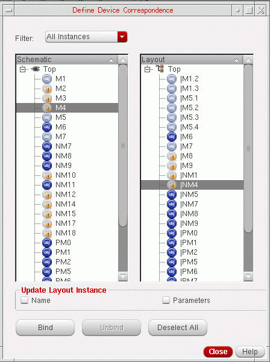Also, the devices that you have just unbound now appear in the Unbound Instances list.
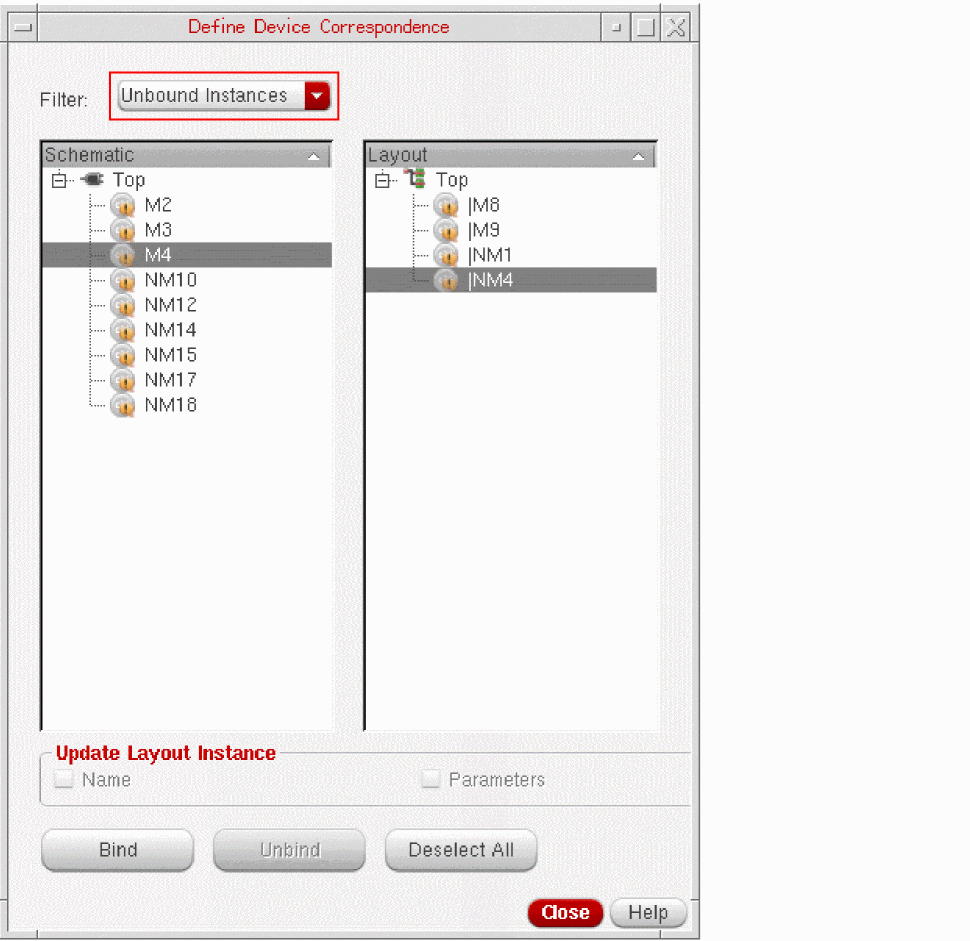
Binding Using the Bind Command in the Context Menu
To manually bind an instance, mosaic, or terminal:
-
In the layout navigator or canvas, select the layout instance to be bound.
- In the schematic navigator assistant or canvas, select the instance to which the selected layout instance needs to be bound.
- In the layout canvas, right-click the selected instance and choose Bind from the context menu.
-
The selected schematic and layout instances are bound and the XL Status column of the layout navigator assistant displays the binding status, as appropriate.
Note:
-
If the environment variable bindUpdateName is set to
t, the name of the layout instance is automatically updated after binding to match the name of the corresponding schematic instance. - After binding, the logical (or schematic instance) connectivity is automatically propagated to the layout instance. But, if there is a terminal mismatch between the schematic and layout instances, the Assign layout instance terminals form is displayed so that layout nets can be selected and assigned manually to instance terminals, as appropriate.
- If the manual binding results in complex binding between the selected schematic and layout instances, a warning message is displayed in the CIW to indicate the same.
-
If the environment variable bindUpdateName is set to
To unbind a layout instance, right-click the instance in the layout navigator or canvas and choose Unbind from the context menu.
Define Device Correspondence SKILL Function
The following public SKILL functions let you set and access device correspondence information in your design. For more information, see
To get device correspondence information, use
To add, set, and replace device correspondence information for instances only, use
- bndAddInstsBindingByName
- bndRemoveInstBindingByName
- bndReplaceInstsBindingByName
- bndSetInstsBindingByName
To add, set, and replace device correspondence information for terminals only, use
To add, set, and replace device correspondence information for either terminals, shapes or instances, use
Updating the Connectivity Reference
Use the Update Connectivity Reference command to update the source schematic for the layout view to change the physical configuration, which specifies how the layout is generated from the schematic.
Updating the Schematic View
In Layout XL, the default schematic is always the schematic view with the same cell name as the layout view. To update your layout using a different schematic, you need to update the connectivity reference.
-
Choose Connectivity – Update – Connectivity Reference.
The Update Connectivity Reference form is displayed. - Check the Use schematic view option and do one of the following:
- Select Update layout cellviews hierarchically to update the library setting for any lower-level cellviews in a hierarchical cellview.
-
Click OK.
Layout XL sets the connectivity reference to the schematic you selected.
Updating the Physical Configuration View
To change the physical configuration in use for a particular schematic,
-
Choose Connectivity – Update – Connectivity Reference.
The Update Connectivity Reference form is displayed. - Check the Use configuration view option and do one of the following.
-
Click OK.
Layout XL sets the physical configuration to the view you specified.
Updating Binding
Use the Connectivity – Update – Binding command (or
- The layout view was created outside Virtuoso Layout Suite XL. In this case, the logical and physical connectivity of the design may be in conflict. In addition, the number of bound instances and the number of shorts may not be as expected.
- The design is known to be LVS-clean, yet there are unbound instances and shorts in the design.
- A hierarchy mismatch exists between the schematic and the layout views, making it impossible to achieve a one-to-one device correspondence.
-
The layout contains different-connectivity mosaics. The Update Binding command flattens these mosaic instances for the binder to process them. Alternatively, you can manually flatten the mosaic instances before the binder can process them.
Note:
- If you have same-connectivity mosaics in your design, these can be handled by the binder like other layout instances. Therefore, you do not need to run the Update Binding command to flatten these mosaic instances.
-
If you do not want your mosaic instances to be flattened during the Update Binding run, you must set an
ignoreproperty on these instances.
-
The layout contains route cells that were not defined in the schematic. The Update Binding command enables you to ignore such layout instances that are identified as route cells. Alternatively, you can manually select these layout instances and add an
ignoreproperty on them. See also, bindIgnoreRouteCells.If the route cells exist within a transparent layout hierarchy, theignoreproperty cannot be added during an Update Binding run. To add theignoreproperty on instances within a transparent hierarchy requires editing the transparent instance master. The Update Binding command does not support such edits that require modifying the layout cellviews other than at the top level. For more information on transparent layout hierarchy, see Generating Transparent Layout Hierarchy.
If the layout has been created using the Layout XL connectivity-aware commands, the layout view is correct by construction and the layout instances are automatically bound to the schematic. In this case, running the Update Binding command is not required. For layouts that are not
To control which issues are reported during an Update Binding run, set the following environment variables, as appropriate:
- bindReportDummies
- bindReportHierarchy
- bindReportTerminalMismatch
- bindReportUnconnInstTerms
-
ignoreTermsWithNonRoutingLabels
Update Binding Flow
Before you run the Update Binding command to initialize the Update Binding flow, a dialog box confirming whether you want to proceed displays, if you have modified the layout or physConfig in the current session.
When the Update Binding command is called, by default, the binder re-runs in the
When binding at the current level, the binder binds the schematic and layout devices only at the current level of hierarchy. Current level binding is best suited for designs that have matching hierarchies. A design that has matching hierarchies but was not bound correctly using Name binding after a Schematic ECO can benefit from Current level binding. It is recommended to run Current level binding in this situation, prior to running the Update Components And Nets command.
A design does not need to be LVS clean to derive better results from Current level binding. Although, largely LVS-clean designs and designs that have mosaics with same connectivity are a good starting point for Current level binding.
Hierarchical binding, on the other hand, by default, binds the schematic and layout instances across the hierarchy, based on the physical bindings defined in the current physConfig view. This type of binding is recommended for LVS-clean designs, because the design is flattened and the physical connectivity extracted.
When performing a hierarchical binding run, you can stop the binder from binding beyond a particular schematic or layout library cellview by setting the bindSourceStop or bindLayoutStop environment variable. By doing so, the binder considers the specified schematic (source) or layout cellview as a leaf-level instance and stops looking beyond the instance for any devices to bind.
If hierarchical binding is run with the Flatten layout instances option selected, Update Binding flattens the instances, if required, and creates leaf-level bindings. Since the leaf-level bindings have a one-to-one correspondence, full ECO capability is available for the design.
With the Flatten Layout Instances option selected, you can choose to retain the flattened instances as free objects, or choose to create a group or a synchronized family. By default, the flattened instances form a synchronized family.
For example, if you flatten an instance, I1, all the shapes that the instance flattens into form a figure group or a synchronized family. Therefore, for each flattened instance, a corresponding figure group or a synchronized family will be created. If hierarchical binding is run with the Flatten layout instances option deselected, the Update Binding command preserves the layout hierarchy and creates either
By default, the Update Binding command binds based on connectivity—both logical and physical.
However, the caveat with re-extracting through the hierarchy is that the extractor can extract through devices, causing shorts. To prevent this, you may need to define stopLayers in your technology file to indicate the layers that are being used for “Stopping” or “Cutting” the diffusion layers. The extractor will then ignore these layers for extraction and any false violations will not be reported. For more information about stopLayers and how you can set these up in your technology file, see Specifying Stop Layers in the validLayers Constraint.
The Update Binding command also provides you the options to preserve any bindings that exist by using the
Contrary to using the hierarchical binder that flattens the schematic (physConfig) and layout hierarchies to the leaf level to determine the best bindings, which may not be at the leaf level, you can either specify a binding file that is derived from a PVS LVS run, or specify a PVS file that has the leaf-level binding information.
The binding file, updateBinding.bnd, is automatically generated by the binder if the instance cross-reference file (.ixf) and the extracted netlist file (.net or .spi) generated from the PVS run are specified.
However, if the generated binding file is empty, Update Binding cannot proceed.
Note:-
The instance cross-reference file is created as a
.ixffile and the extracted netlist file is created as a.netfile in thesvdbdirectory of the PVS run directory, if you run PVS with the Create Quantus Input Data option selected. -
If you run PVS in LVS mode with the
-qrc_dataargument specified, the extracted netlist gets created in the form of a .spifile in the same directory as the .ixf file. The .spifile provides a normalized output for Quantus. Therefore, it is not the preferred input for generating the binding file required by Update Binding. But, a.spifile can be used if a.netfile cannot be generated for some reason.
Cadence recommends that you setlvs_keep_datatoyesin yourlvs.pvlrule file so that the extracted netlist output file is a .net file.
To ensure better binding, the Input Scale value set on the Update Binding form must be the same as that used for the PVS LVS run. If the scale at which PVS is run is different from the layout scale, you can use the PVS rule deck to determine the PVS input_scale. By default, the PVS scale is set to 0, which means the dbuPerUu for the layout is used. See bindPVSScale.
For more information about running the PVS LVS and for generating the required .ixf, .net, and .spi files, see the Cadence Physical Verification User Guide.
Here is an example illustrating the format of a binding file:
I1/N0: Schematic hierarchy path
|I2/MN0: Corresponding layout hierarchy path
M3(1,0): Corresponding mosaic row/column
Irrespective of the method used—automatic hierarchy match or binding file—when the leaf-level binding information is available, the layout is extracted to the specified depth to update the connectivity, and the binder sets the correspondence between the updated layout instances and their schematic counterparts.
ignore property to the instances of “route-only” cellviews to avoid binding to them. Any instances that have stop layers defined are not considered for the ignore property addition, as these instances are recognized as “devices” and, therefore, must be considered for binding during the Update Binding run. For information on how to handle a design that has stop layers defined for some route cells, but not all, see Ignoring Route Cells.During the update, the physConfig also gets updated to set the physical bindings and a force descend ensures that the masters of the devices being bound match, and that the layout instances are being bound to the correct level in the schematic. If the physConfig gets modified during the update, the CPH window automatically opens after the update is complete to enable you to save or discard the edits.
Update Binding Report
To confirm that the binder is initialized, Layout XL issues the following message.
Based on the Update Binding options that you select (or ignore) before you run the command, the CIW reports the start of the command in the form of a report. The Update Binding report details the options that are being used (or ignored) for the update. In addition, the report lists the checks that are being reported (or ignored for reporting), as shown in the sample report below.

The report also lists the cellviews that are being updated, as shown below.
When running Update Binding for all cells in the design, the report also presents a parameter difference summary for the various cells, as shown below.

Information about the binding status of the updated cellviews and the Cell mapping table is also displayed, as shown in the sample report below.
The Cell mapping table provides the following information:
- Permute rule definition on the source and the layout cells being mapped.
- Component type of the mapped cell on each side.
- Split parameters enabled for each cell.
- Terminal names being mapped for each cell.
The sample Cell mapping table displayed above also reports an unmapped source cell. In addition, the table can report issues such as an extra or missing terminal for mapped cells.
The table below lists some issues that are likely to be reported in the Cell mapping section of the Update Binding report. Also listed against each issue is a suggested fix.
Any warning messages are displayed in the WARNINGS section, as shown below.
The percentage compliance data for instances, nets, and terminals, and the total compliance percentage is displayed in the Summary section, as shown below.
If Update Binding does not bind all the instances, for example, when the source has got modified, or the layout has missing instances, the CIW reports the issue and prompts that the binding could be improved by performing the next iterative run. The sample report displayed is as shown below:
In addition to displaying the Update Binding report in the CIW, Layout XL displays the Update Binding report in an HTML window, as shown in the figure below. You can choose to hide this report by appropriately setting the xlComplianceHtmlOpen environment variable.
Having the Update Binding report available in the HTML format brings the following advantages:
- Allows the Update Binding report to be saved on disk.
-
Allows a keyword search on the report, which makes it easy to locate the messages related to a specific instance, terminal, or a net.If you have a Cadence Online Support account, you can view or download the Making a layout XL-compliant using Update Binding Rapid Adoption Kit (RAK) that comprises a workshop database and a guided lab manual to help you run the Update Binding command and explore its benefits in a test environment. This RAK is based on IC6.1.6 ISR5.
For information on resolving some of the common issues reported during an Update Binding run, see Setting up the PDK to Improve Layout XL Compliance. This section provides information not only about the various common issues encountered during an Update Binding run, but also provides detailed instructions on how you can set up a PDK to counter these issues at the global level, and improve the Layout XL compliance of a design.
Updating All Physical Bindings
Use the Connectivity – Update – All Physical Bindings command to update the CPH master of an instance to the layout master if bindings have been created between layout and schematic instances that have different masters.
The Update All Physical Bindings command is particularly useful to remove any master differences between the layout and the schematic and provides a quick and simple method for updating the CPH master without opening the CPH. After the command is run, the CPH master for all the instances in the cellview gets updated to the correct layout master.
If the CPH window is already open, it will be brought to the front and you can choose to save or discard the CPH master update, as appropriate. However, if the CPH window is not open, any changes made to the CPH instance master will automatically get saved in the physConfig. You can also choose to turn off the automatic saving feature by setting the autoSavePhysConfigUpdate environment variable to nil.
Return to top